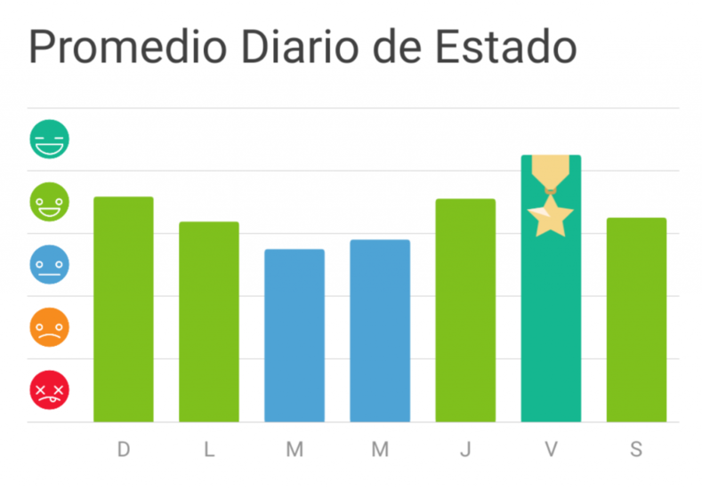

Estadísticas de Ánimo Semanal
Gráfico de estado de ánimo (últimos 7 días)
Resumen Rápido
Estado de ánimo promedio: 6.38 / 10
Emoción más frecuente: Feliz (4 veces)
Día con más energía: Miércoles
Análisis de Razones (última semana)
Razón más común para el estrés: Trabajo (35% de las entradas)
Razón más común para la felicidad: Amigos (28% de las entradas)
Las interacciones con Amigos han sido la mayor fuente de Felicidad esta semana.